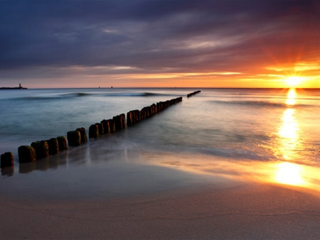

Fotografia

Fotografia (gr. φως, phōs, D. phōtós – światło; gráphō – piszę, graphein – rysować, pisać; rysowanie za pomocą światła) – zbiór wielu różnych technik, których celem jest zarejestrowanie trwałego, pojedynczego obrazu za pomocą światła. Potoczne znaczenie zakłada wykorzystanie układu optycznego, choć nie jest to konieczne np. przy rayografii.
Podróże

Turystyka bywa często utożsamiana z innymi pokrewnymi określeniami. Dla zrozumienia zjawiska turystyki warto również zdefiniować terminy: turyzm, ruch turystyczny i rekreacja. Przykładem wyjazdów zaliczanych do turystyki kulturowej są podróże na przedstawienia te teatralne, opery, oglądanie wystaw czasowych w galeriach i muzeach. W turystyce kulturowej, widać bardzo ścisłe związki turystyki i kultury. Kultura staje się ważnym elementem wielu programów turystycznych.

Często do turystyki kulturowej zalicza się także inne formy spędzania czasu wolnego, np. odwiedzanie parków rozrywki, relaks, zwiedzanie miejsc historycznych. Charakterystyczne są również imprezy handlowe -rozrywkowe. Doskonałym przykładem może być odbywający się, co roku latem Jarmark św. Dominika w Gdańsku, przyciągający swoją tradycją rzesze turystów. W ostatnim czasie w niektórych środowiskach, charakterystycznym sposobem spędzania czasu wolnego jest odwiedzanie hipermarketów, robienie zakupów oraz korzystanie z dodatkowych usług i atrakcji.
Muzyka

Muzyka to najsubtelniejsza forma przekazu, można stwierdzić, że żadna dziedzina sztuki nie porusza ani nie wpływa na podświadomość tak, jak muzyka.
Muzyka (gr. mousike, cz. hudba, staropol. gędźba) – sztuka organizacji struktur dźwiękowych w czasie. Jedna z dziedzin sztuk pięknych, która wpływa na psychikę człowieka przez dźwięki. Struktury dźwiękowe składają się z zestawów fal akustycznych o celowo dobranych częstotliwościach i amplitudach oraz ciszy pomiędzy nimi. Celem muzyki jest samoekspresja oraz przekaz subiektywnych odczuć kompozytora lub wykonawcy który ma wpływ na odczucia, reakcje i świadomość słuchacza przetwarzającego te doznania w sposób zupełnie indywidualny.


{kind=link}